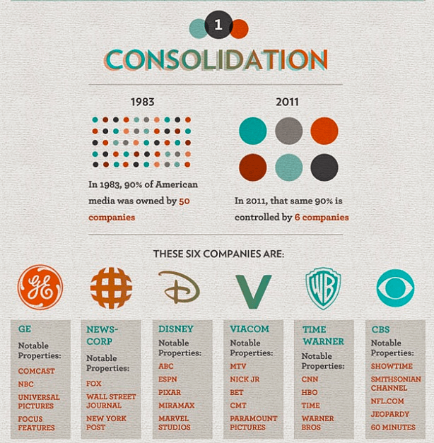
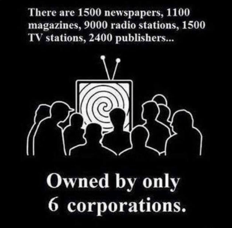

Alfonso Taft is a surfer stoner All-American Aryan alpha male quarterback. Raised in the Northeast, he speaks with a Southern twang for no apparent reason. Host of America's #1 Chadcast.


Cable television is a blue pill pacifier of mind control and psychological conditioning. Within my own personal life, I’ve noticed a direct correlation between the amount of television somebody watches and how uninteresting they are as a person. The Manosphere offers a plethora of analysis on the mindset of the indoctrinated leftist and what fuels their crude, vitriolic behavior. For the disease of liberalism, I offer a simple diagnosis: they watch too much television.
After Philo Farnsworth invented television in 1938 in Fort Wayne, Indiana, he did not allow his family to watch. “There’s nothing on it worthwhile, and we’re not going to watch it in this household, and I don’t want it in your intellectual diet,” said Mr. Farnsworth. He was aware of his invention’s ability to control the mind and population at large.

“I know the secret of making the average American believe anything I want him to. Just let me control the television.” – Philo Farnsworth
Have you ever tried to get the attention of a child or friend while they’re watching television? You’re two feet away, practically yelling in their ear and they still don’t hear you because they are consumed by the TV, mesmerized, practically drooling. This is because their mind is in a hypnotic state.
Watching television induces low alpha waves in the brain putting your mind in a passive, suggestive condition. Low alpha waves induced by the flicker rate of television aren’t the same as relaxed alpha wave states created by meditation or going for a walk. Low alpha waves are the opposite of beta waves which are produced during mental activities. Beta waves are associated with active, logical thought.
The logical part of your brain turns off while watching television. Advertisers are aware of this and their task is to simply associate their brand with something positive during this hyper-receptive state, precisely why you see so many hot babes in beer commercials.
Has it happened that you were watching a television show, and when it cuts to commercial break, you forget what you’re watching? This is because your mind is essentially asleep while you’re watching television. Your eyes remain open, but your mind rests in a trancelike state.
90% of the media we consume comes from six giant companies—GE, News-Corp, Disney, Viacom, Time Warner, and CBS. GE owns Comcast, NBC, and Universal Pictures. News-Corp owns Fox, The Wall Street Journal, and The New York Post. Disney owns ABC, ESPN, Pixar, Miramax, and Marvel Studios. Viacom controls MTV, Nick Jr., BET, CMT and Paramount Pictures. Time Warner is in possession of CNN, HBO, and Time. CBS owns Showtime and NFL.com.

The media is in the hands of a very few, powerful corporations. Virtually everything on television is globalist approved propaganda. The television consumer is given the illusion of choice.

As noted by Phil Farnsworth television is not reality, rather it distorts one’s vision of reality. The concept of a media diet is important. Your diet doesn’t simply consist of the things you eat. Almost as important, your media diet is a direct reflection of where your intellectual curiosity has taken you which includes things like movies, books, blogs, and live streams. Watching television is a form of mental incarceration where the incurious choose to remain asleep.
As a youth, my young relatives and I would mischievously gather around the television to watch “Trash TV” like Jerry Springer and Maury. An older relative of mine would storm into the room and tell us not to watch “Trash TV.” Fast-forward to the current year and that same boomer relative is completely addicted to CNN, MSNBC and other forms of Trash TV.
We are at a point in history where people living in the same countries are actually living in different worlds depending upon where they get their information. For many, especially boomers, a news story is not “real” unless it’s on television. In this sense, the television screen completely controls their sense of reality. An issue is not “legit” unless they are programmed to believe it’s legitimate. For many Boomers, television is their god. It’s their ultimate authority on all information.
Next time you watch a commercial on television, conduct an experiment and see if the commercial fits into the cultural Marxist paradigm. I almost guarantee you the men will be depicted as incompetents and women will have the logic of astronauts. This is especially true in family car and beer commercials, often referred to as Cuckmercials. I can assure you, Cuckmercials are frequent if not dominant.
Once you realize the only product being sold on TV is cultural Marxism controlled by a small group of corporations, it becomes difficult if not impossible to watch. Watching television trains your brain to watch more television. Breaking the habit becomes easy after breaking the behavioral and social patterns involved with watching TV are broken.
Don’t hang out with television addicts. They offer nothing but useless pop trivia and sportsball knowledge. Their bodies will decay into cold bags of soymilk as they melt on their couches glued to the Boomer Tube. The culture of liberalism consists mostly of television, Netflix, Sportsball, Beyoncé, obesity, and homosexuality. The main culprit of their illness is their one true god, the television screen.